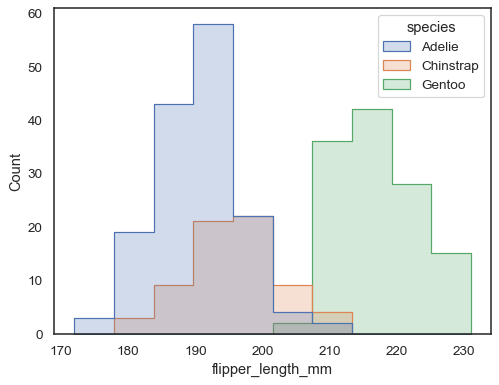
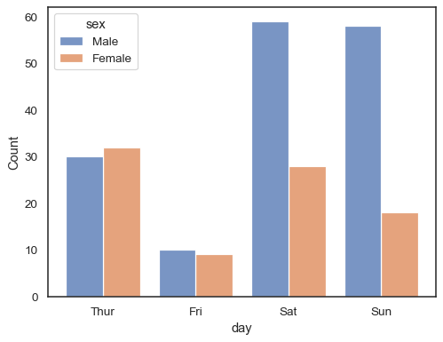

seaborn.histplot#
- seaborn.histplot(data=None, *, x=None, y=None, hue=None, weights=None, stat='count', bins='auto', binwidth=None, binrange=None, discrete=None, cumulative=False, common_bins=True, common_norm=True, multiple='layer', element='bars', fill=True, shrink=1, kde=False, kde_kws=None, line_kws=None, thresh=0, pthresh=None, pmax=None, cbar=False, cbar_ax=None, cbar_kws=None, palette=None, hue_order=None, hue_norm=None, color=None, log_scale=None, legend=True, ax=None, **kwargs)#
Plot univariate or bivariate histograms to show distributions of datasets.
A histogram is a classic visualization tool that represents the distribution of one or more variables by counting the number of observations that fall within discrete bins.
This function can normalize the statistic computed within each bin to estimate frequency, density or probability mass, and it can add a smooth curve obtained using a kernel density estimate, similar to
kdeplot().More information is provided in the user guide.
- Parameters:
- data
pandas.DataFrame,numpy.ndarray, mapping, or sequence Input data structure. Either a long-form collection of vectors that can be assigned to named variables or a wide-form dataset that will be internally reshaped.
- x, yvectors or keys in
data Variables that specify positions on the x and y axes.
- huevector or key in
data Semantic variable that is mapped to determine the color of plot elements.
- weightsvector or key in
data If provided, weight the contribution of the corresponding data points towards the count in each bin by these factors.
- statstr
Aggregate statistic to compute in each bin.
count: show the number of observations in each binfrequency: show the number of observations divided by the bin widthprobabilityorproportion: normalize such that bar heights sum to 1percent: normalize such that bar heights sum to 100density: normalize such that the total area of the histogram equals 1
- binsstr, number, vector, or a pair of such values
Generic bin parameter that can be the name of a reference rule, the number of bins, or the breaks of the bins. Passed to
numpy.histogram_bin_edges().- binwidthnumber or pair of numbers
Width of each bin, overrides
binsbut can be used withbinrange.- binrangepair of numbers or a pair of pairs
Lowest and highest value for bin edges; can be used either with
binsorbinwidth. Defaults to data extremes.- discretebool
If True, default to
binwidth=1and draw the bars so that they are centered on their corresponding data points. This avoids “gaps” that may otherwise appear when using discrete (integer) data.- cumulativebool
If True, plot the cumulative counts as bins increase.
- common_binsbool
If True, use the same bins when semantic variables produce multiple plots. If using a reference rule to determine the bins, it will be computed with the full dataset.
- common_normbool
If True and using a normalized statistic, the normalization will apply over the full dataset. Otherwise, normalize each histogram independently.
- multiple{“layer”, “dodge”, “stack”, “fill”}
Approach to resolving multiple elements when semantic mapping creates subsets. Only relevant with univariate data.
- element{“bars”, “step”, “poly”}
Visual representation of the histogram statistic. Only relevant with univariate data.
- fillbool
If True, fill in the space under the histogram. Only relevant with univariate data.
- shrinknumber
Scale the width of each bar relative to the binwidth by this factor. Only relevant with univariate data.
- kdebool
If True, compute a kernel density estimate to smooth the distribution and show on the plot as (one or more) line(s). Only relevant with univariate data.
- kde_kwsdict
Parameters that control the KDE computation, as in
kdeplot().- line_kwsdict
Parameters that control the KDE visualization, passed to
matplotlib.axes.Axes.plot().- threshnumber or None
Cells with a statistic less than or equal to this value will be transparent. Only relevant with bivariate data.
- pthreshnumber or None
Like
thresh, but a value in [0, 1] such that cells with aggregate counts (or other statistics, when used) up to this proportion of the total will be transparent.- pmaxnumber or None
A value in [0, 1] that sets that saturation point for the colormap at a value such that cells below constitute this proportion of the total count (or other statistic, when used).
- cbarbool
If True, add a colorbar to annotate the color mapping in a bivariate plot. Note: Does not currently support plots with a
huevariable well.- cbar_ax
matplotlib.axes.Axes Pre-existing axes for the colorbar.
- cbar_kwsdict
Additional parameters passed to
matplotlib.figure.Figure.colorbar().- palettestring, list, dict, or
matplotlib.colors.Colormap Method for choosing the colors to use when mapping the
huesemantic. String values are passed tocolor_palette(). List or dict values imply categorical mapping, while a colormap object implies numeric mapping.- hue_ordervector of strings
Specify the order of processing and plotting for categorical levels of the
huesemantic.- hue_normtuple or
matplotlib.colors.Normalize Either a pair of values that set the normalization range in data units or an object that will map from data units into a [0, 1] interval. Usage implies numeric mapping.
- color
matplotlib color Single color specification for when hue mapping is not used. Otherwise, the plot will try to hook into the matplotlib property cycle.
- log_scalebool or number, or pair of bools or numbers
Set axis scale(s) to log. A single value sets the data axis for univariate distributions and both axes for bivariate distributions. A pair of values sets each axis independently. Numeric values are interpreted as the desired base (default 10). If
False, defer to the existing Axes scale.- legendbool
If False, suppress the legend for semantic variables.
- ax
matplotlib.axes.Axes Pre-existing axes for the plot. Otherwise, call
matplotlib.pyplot.gca()internally.- kwargs
Other keyword arguments are passed to one of the following matplotlib functions:
matplotlib.axes.Axes.bar()(univariate, element=”bars”)matplotlib.axes.Axes.fill_between()(univariate, other element, fill=True)matplotlib.axes.Axes.plot()(univariate, other element, fill=False)matplotlib.axes.Axes.pcolormesh()(bivariate)
- data
- Returns:
matplotlib.axes.AxesThe matplotlib axes containing the plot.
See also
displotFigure-level interface to distribution plot functions.
kdeplotPlot univariate or bivariate distributions using kernel density estimation.
rugplotPlot a tick at each observation value along the x and/or y axes.
ecdfplotPlot empirical cumulative distribution functions.
jointplotDraw a bivariate plot with univariate marginal distributions.
Notes
The choice of bins for computing and plotting a histogram can exert substantial influence on the insights that one is able to draw from the visualization. If the bins are too large, they may erase important features. On the other hand, bins that are too small may be dominated by random variability, obscuring the shape of the true underlying distribution. The default bin size is determined using a reference rule that depends on the sample size and variance. This works well in many cases, (i.e., with “well-behaved” data) but it fails in others. It is always a good to try different bin sizes to be sure that you are not missing something important. This function allows you to specify bins in several different ways, such as by setting the total number of bins to use, the width of each bin, or the specific locations where the bins should break.
Examples
Assign a variable to
xto plot a univariate distribution along the x axis:penguins = sns.load_dataset("penguins") sns.histplot(data=penguins, x="flipper_length_mm")
Flip the plot by assigning the data variable to the y axis:
sns.histplot(data=penguins, y="flipper_length_mm")
Check how well the histogram represents the data by specifying a different bin width:
sns.histplot(data=penguins, x="flipper_length_mm", binwidth=3)
You can also define the total number of bins to use:
sns.histplot(data=penguins, x="flipper_length_mm", bins=30)

Add a kernel density estimate to smooth the histogram, providing complementary information about the shape of the distribution:
sns.histplot(data=penguins, x="flipper_length_mm", kde=True)
If neither
xnoryis assigned, the dataset is treated as wide-form, and a histogram is drawn for each numeric column:sns.histplot(data=penguins)
You can otherwise draw multiple histograms from a long-form dataset with hue mapping:
sns.histplot(data=penguins, x="flipper_length_mm", hue="species")

The default approach to plotting multiple distributions is to “layer” them, but you can also “stack” them:
sns.histplot(data=penguins, x="flipper_length_mm", hue="species", multiple="stack")
Overlapping bars can be hard to visually resolve. A different approach would be to draw a step function:
sns.histplot(penguins, x="flipper_length_mm", hue="species", element="step")
You can move even farther away from bars by drawing a polygon with vertices in the center of each bin. This may make it easier to see the shape of the distribution, but use with caution: it will be less obvious to your audience that they are looking at a histogram:
sns.histplot(penguins, x="flipper_length_mm", hue="species", element="poly")
To compare the distribution of subsets that differ substantially in size, use independent density normalization:
sns.histplot( penguins, x="bill_length_mm", hue="island", element="step", stat="density", common_norm=False, )
It’s also possible to normalize so that each bar’s height shows a probability, proportion, or percent, which make more sense for discrete variables:
tips = sns.load_dataset("tips") sns.histplot(data=tips, x="size", stat="percent", discrete=True)
You can even draw a histogram over categorical variables (although this is an experimental feature):
sns.histplot(data=tips, x="day", shrink=.8)
When using a
huesemantic with discrete data, it can make sense to “dodge” the levels:sns.histplot(data=tips, x="day", hue="sex", multiple="dodge", shrink=.8)
Real-world data is often skewed. For heavily skewed distributions, it’s better to define the bins in log space. Compare:
planets = sns.load_dataset("planets") sns.histplot(data=planets, x="distance")
To the log-scale version:
sns.histplot(data=planets, x="distance", log_scale=True)
There are also a number of options for how the histogram appears. You can show unfilled bars:
sns.histplot(data=planets, x="distance", log_scale=True, fill=False)
Or an unfilled step function:
sns.histplot(data=planets, x="distance", log_scale=True, element="step", fill=False)
Step functions, esepcially when unfilled, make it easy to compare cumulative histograms:
sns.histplot( data=planets, x="distance", hue="method", hue_order=["Radial Velocity", "Transit"], log_scale=True, element="step", fill=False, cumulative=True, stat="density", common_norm=False, )
When both
xandyare assigned, a bivariate histogram is computed and shown as a heatmap:sns.histplot(penguins, x="bill_depth_mm", y="body_mass_g")
It’s possible to assign a
huevariable too, although this will not work well if data from the different levels have substantial overlap:sns.histplot(penguins, x="bill_depth_mm", y="body_mass_g", hue="species")
Multiple color maps can make sense when one of the variables is discrete:
sns.histplot( penguins, x="bill_depth_mm", y="species", hue="species", legend=False )

The bivariate histogram accepts all of the same options for computation as its univariate counterpart, using tuples to parametrize
xandyindependently:sns.histplot( planets, x="year", y="distance", bins=30, discrete=(True, False), log_scale=(False, True), )
The default behavior makes cells with no observations transparent, although this can be disabled:
sns.histplot( planets, x="year", y="distance", bins=30, discrete=(True, False), log_scale=(False, True), thresh=None, )
It’s also possible to set the threshold and colormap saturation point in terms of the proportion of cumulative counts:
sns.histplot( planets, x="year", y="distance", bins=30, discrete=(True, False), log_scale=(False, True), pthresh=.05, pmax=.9, )
To annotate the colormap, add a colorbar:
sns.histplot( planets, x="year", y="distance", bins=30, discrete=(True, False), log_scale=(False, True), cbar=True, cbar_kws=dict(shrink=.75), )